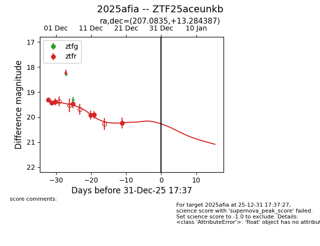
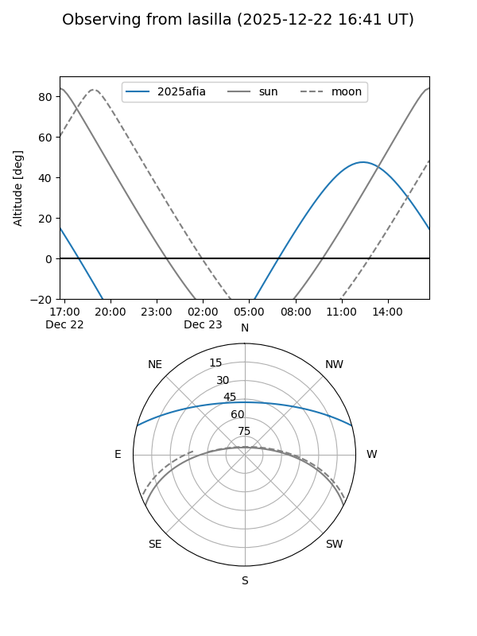
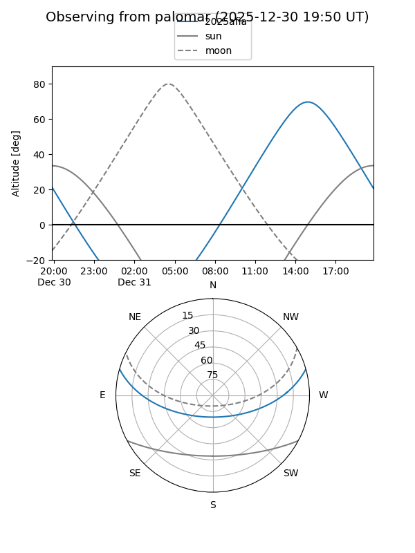
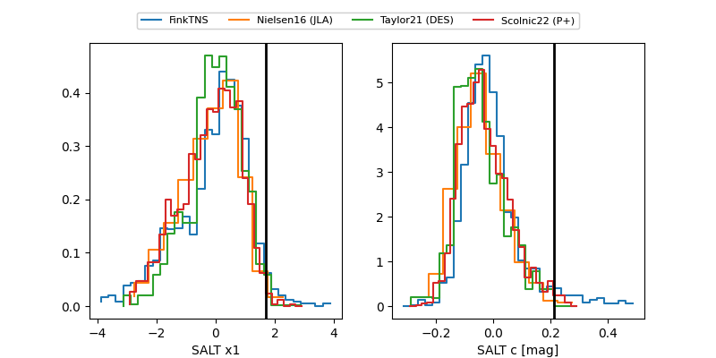

2025afia
Target 2025afia at 2025-12-22 15:06
Aliases and brokers:
FINK: fink-portal.org/ZTF25aceunkb
Lasair: lasair-ztf.lsst.ac.uk/objects/ZTF25aceunkb
ALeRCE: alerce.online/object/ZTF25aceunkb
TNS: wis-tns.org/object/2025afia
YSE: ziggy.ucolick.org/yse/transient_detail/2025afia
alt names
ZTF25aceunkb (ztf,fink_ztf)
2025afia (tns,yse)
Coordinates:
equatorial (ra, dec) = 207.0835,+13.28439
equatorial (HMS+DMS) = 13:48:20.04,+13:17:03.79
galactic (l, b) = (349.5916,+70.80351)
Flags:
Photometry:
last ztfr=20.24
7 ztfr detections
Lightcurve

Visibility


Additional plots
